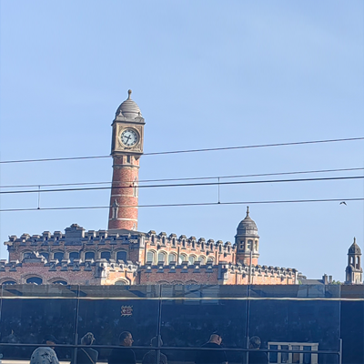

比利时没有法国那么强的艺术感,也没有德国那样的秩序气质,但是在欧洲出差时,我在比利时住的时间最长,比国给我一种生活烟火气的感觉.
比国的移民比我想象的还要多,我住在布鲁塞尔的圣吉尔区,前后还换了俩住的地方,来来回回少不了问路,但是移民都很耐心友好.比利时的公交系统很复杂,电车和公交车有时是一个站点.
比国的农产品都还挺新鲜,我在比国时南南北北、荷语区、法语区都跑过,他们有很多农场和畜牧地,比如在根特时我会在市中心广场农市摊位买一些路上吃的水果.
在那呆过一段时间后,还真觉得比国在西欧就是个交通枢纽的存在,北上荷兰丹麦、东到德国莱茵区、南下法国巴黎都很近.可惜我在的那段时间到卢森堡在修路,不然我可以来个比、卢、德三角形游学路线.怪不得一战二战时比利时屡次成为激战中心.
身在比国的时候,那些夜里,有时候我没有觉得自己在国外,像是就在老家呆着,在那的生活还是挺温馨的.

根特(Gent.Saint.Piere)的钟楼.